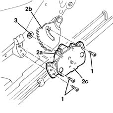

7045A36 drivers seat manual height adjustment device - r r
- Path
- Procedures > 70 FITTINGS > 7045 FRONT SEATS > 7045A front seat assembly > 7045A36 drivers seat manual height adjustment device - r r
- Kind
- repair procedure (removal / refitting; the operation number is the code)
- Applies to
- all engines; all production periods
- Interactive page
- https://sloeber94.github.io/elrnDB-lYpsln/en/#/2429611
Applies to: all engines; all production periods
 Removing
Removing
 Refitting
RefittingLift the seat at the end of its travel.
7045A56 LEVER controlling DRIVER'S seat height adjustment device - R.R .
7045A43 seat exterior guard - r r
1. Undo the bolts.
2. Released the toothed wheel (2a) from the toothed sector (2b) and remove the manual device (2c).
3. Keep the bush.

Applies to: all engines; all production periods
Refitting
RemovingCheck that the manual device is not damaged.
Position the bush and the manual device attaching the toothed wheel to the toothed sector.
Tighten the bolts.
7045A43 seat exterior guard - r r
7045A56 LEVER controlling DRIVER'S seat height adjustment device - R.R .
Place the seat in the correct position.
Topics linked from this page (2)
- 7045A43 seat exterior guard - r r
- 7045A56 LEVER controlling DRIVER'S seat height adjustment device - R.R .